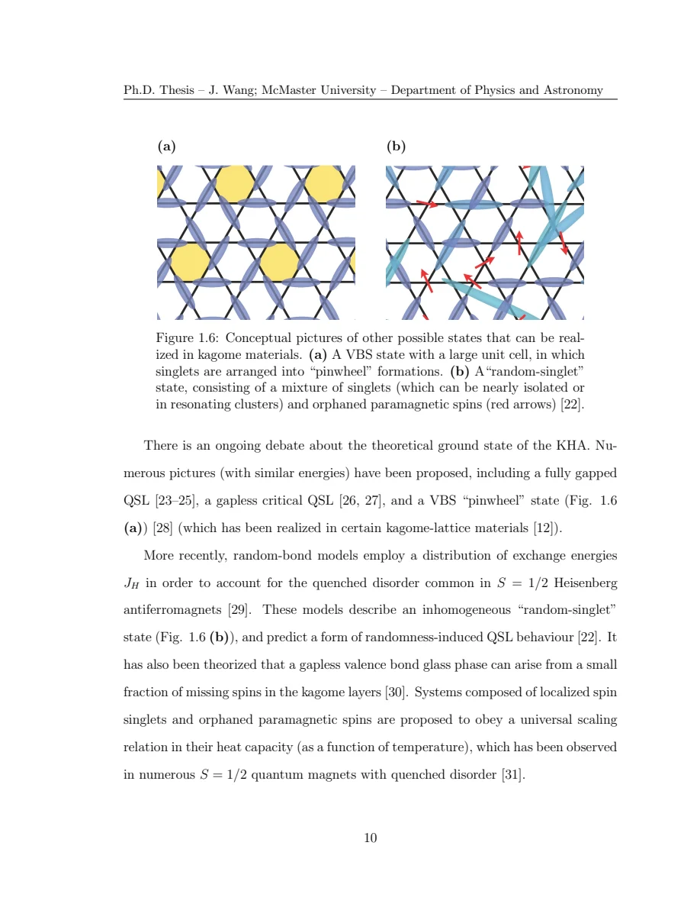

Wang · supplied source 2024 · chapter unit
1 · What counts as a spin-liquid candidate?
A frustrated model, a real material and a diagnostic measurement are different levels of evidence.
The question: Why can disorder imitate an apparently disordered magnetic ground state?
Before you start: the terms you need
- Quantum spin liquid candidate: a material tested against a quantum-disordered model; a null ordering signal is insufficient identification.
- K: local resonance shift, sensitive to a coupling-weighted static susceptibility.
- 1/T₁: recovery rate that samples fluctuations in the probe frequency window.
- ILT: constrained, regularized inference of a relaxation-rate distribution from recovery data.
- log-rate density: probability is the area in d log₁₀(1/T₁), not peak height.
See → explain → check
Follow the idea in 2 pictures.
Picture 1 / 2
Different ways to remain disordered
Look for: The same absence of bulk order can accompany different microscopic states.
Swipe across the picture to read every label, or enlarge it below.
- Quantum liquid model
- Valence-bond solid
- Disordered mixture
Conceptual categories, not a phase diagram.
A candidate needs more than a null transition.
Check the original: Original PDF p. 18 · Original PDF p. 20 · Original PDF p. 24
Picture 2 / 2
Geometry is a hypothesis
Look for: Model interactions and imperfections both act on the real lattice.
Swipe across the picture to read every label, or enlarge it below.
- Model + crystal
- Additional interactions / defects
- Local-probe tests
No calibrated phase boundaries are drawn.
The thesis tests local environments rather than assuming an ideal model.
Check the original: Original PDF p. 25 · Original PDF p. 26 · Original PDF p. 27
Explain it back.
Try answering aloud before opening the explanation.
Is a valence-bond solid a QSL by definition?
No. A fixed bond pattern breaks translation symmetry; a resonating quantum liquid is a different ground-state concept.
Why compare lattice and Hamiltonian?
The same geometrical lattice can support different interactions, and imperfections can add competing terms. The geometry alone does not establish the state.
Go deeper Follow the full argument
Separate frustration, entanglement and sample quality
Chapter 1 introduces frustration through incompatible pairwise preferences and contrasts an ordered magnet, a fixed valence-bond pattern and a resonating state. A fixed arrangement of singlet bonds is a valence-bond solid; it should not be relabeled a liquid merely because individual pairs are nonmagnetic. The thesis presents frustration ratios and the absence of sharp ordering anomalies as candidate-selection clues. These are useful constraints, but they do not uniquely identify long-range entanglement or fractionalized excitations. A low-temperature null result needs a stated temperature floor, probe time scale and sensitivity. The introduction also describes spectral continua as motivating evidence while recognizing that material imperfections can produce other responses.
Original PDF p. 15 · Original PDF p. 18 · Original PDF p. 19 · Original PDF p. 20
Compare the two model geometries
The kagome Heisenberg picture uses corner-sharing triangles of Cu spins. The Kitaev honeycomb picture instead has bond-dependent spin components, with a coupling selecting x, y or z according to the bond. Their frustration mechanisms are different. Herbertsmithite and Zn-barlowite have different layer stacking and nonmagnetic interlayer ions; residual Cu at those interlayer positions can influence nearby planes. The iridate is not an exact Kitaev Hamiltonian: Heisenberg and off-diagonal interactions, changed bond geometry and structural disorder can compete with the idealized model. The source’s purpose is therefore to identify the experimentally observable environments of actual specimens, rather than infer a model ground state solely from their crystallographic lattice.
Original PDF p. 21 · Original PDF p. 22 · Original PDF p. 23 · Original PDF p. 24 · Original PDF p. 25 · Original PDF p. 26 · Original PDF p. 27
Turn candidate evidence into a test
Start by listing what the source can establish directly: resonance frequencies, line shapes, echo amplitudes and recovery curves. Next identify a model connecting each observation to spin susceptibility or dynamics. Finally state the possible material interpretation. A nonmagnetic-looking region could contain singlets, a weakly coupled environment, filtered fluctuations or signals outside the measurement window. The thesis’s later sample and isotope comparisons supply extra constraints. The introduction is a map of questions; the substantive new experimental results are in Chapters 4–6, so general motivating statements should not be treated as those chapters’ direct observations.
Original PDF p. 20 · Original PDF p. 24 · Original PDF p. 28
Translate the mathematics Essential equations and their meaning
This unit is read through its observations and assumptions; no extra equation is invented.
Read the evidence Guided original source pages

Original PDF p. 24
What the evidence supports—and where it stops
- Introduction claims are motivating historical context; direct sample evidence appears later.
Source version, reading coverage and preservation
All substantive text in Chapters 1–7, the reprinted research article and numerical appendices read; original working kernels, equations and key result figures visually checked.
Reviewed body pages: 15, 16, 17, 18, 19, 20, 21, 22, 23, 24, 25, 26, 27, 28, 29, 30, 31, 32, 33, 34, 35, 36, 37, 38, 39, 40, 41, 42, 43, 44, 45, 46, 47, 48, 49, 50, 51, 52, 53, 54, 55, 56, 57, 58, 59, 60, 61, 62, 63, 64, 65, 66, 67, 68, 69, 70, 71, 72, 73, 74, 75, 76, 77, 78, 79, 80, 81, 82, 84, 85, 86, 87, 88, 89, 90, 91, 92, 93, 94, 95, 96, 97, 98, 99, 100, 101, 102, 103, 104, 105, 106, 107, 108, 109, 110, 111, 112, 113, 114, 115, 116, 117, 118, 119, 120, 121, 122, 123. Personal acknowledgements omitted from teaching content. Bibliographies and external supplements not independently re-read; only material actually present in the thesis is covered.
Source SHA-256: 80ad8aaad2ce3f48320bef046c30907939f8018990292aa5ebb7e5269d912da2. Original file bytes preserved locally; public scientific page images are rendered from that source.
Thesis - Wang - 2024 - Disordered spin liquids - NMR and inverse Laplace analysis.pdf